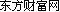

铁矿石涨近5% 内盘期货全线飘红
铁矿石涨近5% 内盘期货全线飘红
2017年02月13日 10:27 来源：
内盘期货今日全线飘红，截止发稿，沪铜涨逾5%突破50000关口，铁矿石涨近5%再创两年半新高，焦炭涨逾4%。
春节长假后，国内现货钢市从价格上来说，实现了一个“开门红”，但是实质成交尚未完全放量，有“市场未动、价格先行”的味道。进口铁矿石市场则呈现上涨走势。
据国内知名钢铁资讯机构“我的钢铁”提供的最新市场报告，春节之后，国内钢市虽然已在慢慢启动，但是春节的气氛尚未完全散去，不少下游终端企业以及工地尚未完全开工，现货市场销售显出“有价无量”的特征。目前，全国主要钢材品种的社会库存总量同比出现较大增幅，这对后期的市场而言，形成了一定的压力。
据分析，在建筑钢市场上，价格迎来了“开门红”，其中广州、上海、成都等地吨价一周上涨40元至120元。作为建筑钢价“前导风向标”的钢坯价格，涨势更是强盛，有的市场上节后吨价累计上涨230元。但是从成交情况来看，总量依然偏低，而且节前最后一波拉涨透支了部分的节后需求，所以成交量的大幅释放，仍需等待。从区域情况来看，北方地区仍未改成交低迷的局面，华东和华南地区相对而言成交开始有所恢复。
目前需要关注的有两点：一是钢厂生产的积极性有提高的趋势，成品材的产量将会持续增加，届时供应端的压力将会逐渐凸显；二是目前的社会库存水平保持高位，而且短期内仍将持续上升。从库存的结构状况来分析，增量压力主要在建筑钢材这一部分，板卷相对压力较小。待元宵节后下游陆续进入完全复工状态，钢市库存的消化情况，将是未来钢价走势的重要影响因素。
铁矿石市场则是稳中趋涨。据“西本新干线”的最新报告，在国产矿市场上，河北地区铁精粉价格维持平稳。受矿山春节安全检修的影响，国产矿目前开工率仍处于低位，多数矿山的复工计划均在农历正月十五以后，其中，大中型矿山的复产热情较为积极。钢厂对国产矿的采购不积极，以观望为主。而进口矿价则是连续上涨，截至9日，普氏62%品位铁矿石指数报收于每吨84美元，一周上涨3.25美元。据统计，1月份，我国进口铁矿石9200万吨，同比大幅增长12%，显示海外矿山的发货量不断增长。当前，无论是铁矿石的钢厂库存还是港口库存，均处在历史高位，铁矿石供应整体趋于宽松。不过，钢铁企业对进口矿的采购较为积极，这将使进口矿的价格继续在高位震荡。
相关机构分析认为，当前尽管社会库存大幅攀升，但钢厂内的库存及其资金压力不算太大，所以钢厂的挺价意愿强烈。而且，从今年全年来看，各地钢铁“去产能”及中频炉整治都会加快推进，钢厂即使生产积极性回升，但供应释放还是会存在制约因素，这对钢价走势会形成利好，短期内国内钢价仍有上涨的动力。
推荐产品


相关推荐
随机推荐
- 厚壁螺旋钢管钢质等级标准
- 新乡外径500的X46防腐螺旋钢管力学性能
- 螺旋管厂螺旋钢管价格|表面处理方法
- 德阳螺旋钢管知识 德阳16mn螺旋钢管厂 德阳生产
- 需求难以稳定释放，螺旋钢管价格仍将承受下行
- 12月23日外径114的SY5036-83打桩螺旋钢管需求将逐渐
- 螺旋钢管标准分类及其钢管材质简单介绍
- 2017-2018螺旋钢管走势,趋势
- 螺旋管厂的主要发展方向在哪里？
- 7月24日钢市快讯：无锡螺旋钢管价格上涨20
- 湖北小口径螺旋钢管 湖北螺旋管一吨多少钱 湖北
- 螺旋钢管的检验方法（物理检验方法）
- 螺旋钢管等部分库存增幅有所扩大的原因
- 临沂12月3日零利润处理壁厚30的GB/T3640-88热镀锌螺
- 螺旋管表面处理方法
- 螺旋管厂分析师直言短期或难见钢厂减产
- 泰安外径219的SY/T5037-2000船用螺旋钢管每吨单价
- 供应5月10日天津市场螺旋焊管报价
- 大邱庄市场螺旋钢管价格 暂稳 成交一般
- q235螺旋管一直处于震荡下行走势
- 广东Q345b螺旋管 广东X42螺旋管 广东16锰螺旋钢管
- 螺旋管厂库存难以在短时间明显降低 去
- 吉林防腐螺旋钢管 吉林16mn螺旋钢管 吉林螺旋管
- 螺旋钢管如何通过专项审核？运用状态进行审计
- 国内螺旋钢管价格继续快速推涨
- 台北螺旋钢管市场 台北SY/T5037螺旋管 台北螺旋钢
- 12月26日鹤壁外径780的X80钢套钢保温螺旋钢管1英尺
- 本周大口径螺旋管中表现最好的是螺旋管品种
- 11月22日壁厚8的GB/T3640-88不锈钢螺旋钢管哪里的最
- 儋州机械加工壁厚45的1Cr18Ni9气体输送螺旋钢管每
重点推荐
- 螺旋管厂在制作螺旋焊管过程中,需要主意的问题
- 波段和趋势共振对螺旋钢管价格有不可预计的推
- 广东Q345b螺旋管 广东X42螺旋管 广东16锰螺旋钢管
- 天津螺旋钢管市场价格小幅下降20元
- 不同板厚及不同环境温度下16Mn钢的预热温度
- 螺旋管厂、螺旋钢管价格交货技术条件
- 沈阳购买螺旋钢管 沈阳螺旋钢管生产工艺 沈阳螺
- 云南螺旋钢管图片 云南排水用螺旋钢管 云南螺旋
- 安庆购买螺旋钢管 安庆螺旋钢管生产工艺 安庆螺
- 天津螺旋管厂-节能减排效力显现
- 南昌生产钢管 南昌钢管壁厚标准 南昌钢
- 外贸16锰钢管 外贸Q235A螺 外贸L245钢管
- 大庆Q235A螺旋管 大庆q345c螺旋钢管 大庆Q345b螺旋管
- Q235B螺旋管生产工艺Q235B螺旋管的特点
- 螺旋钢管按用途分为
- 成都保温螺旋钢管 成都16锰螺旋钢管 成都
- 螺旋管的外径,内径,相邻螺旋间距约为多少算标准
- 黄冈GB/T9711螺旋管 黄冈螺旋钢管市场 黄冈l360螺旋
- 什么是螺旋缝钢管|Q235螺旋钢管工艺流程
- “2012世界末日”之后能否也让螺旋钢管劫难重生